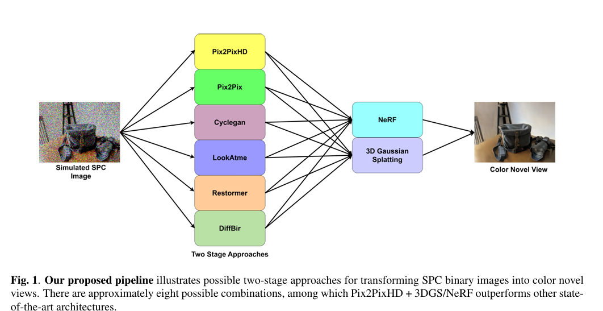

Abstract
Single Photon Cameras (SPCs) offer exceptional temporal sensitivity by detecting individual photons, but their binary measurements contain severely limited texture and color information. This makes conventional 3D reconstruction and novel-view synthesis methods challenging to apply directly.
We propose a modular two-stage framework that first translates binary SPC images into plausible color representations using image-to-image translation and subsequently reconstructs the scene using Neural Radiance Fields or 3D Gaussian Splatting. We investigate multiple I2I and 3D reconstruction combinations and demonstrate that Pix2PixHD combined with NeRF or 3DGS produces improved perceptual and geometric quality.
Full Video Presentation
Watch the complete project presentation hosted on Google Drive.
Motivation
Single-Photon Imaging
SPC/ SPAD imaging can operate with very high sensitivity and temporal resolution.
The Challenge
Binary photon measurements provide limited intensity, texture, and color information.
Our Question
Can meaningful color novel views be recovered from binary SPC measurements?
Method
Our modular pipeline separates appearance recovery from 3D reconstruction.

Binary SPC → Color
Image-to-image translation converts simulated 3-channel binary SPC measurements into color images.
Color → Novel Views
The translated color representations are used for 3D scene reconstruction and novel-view synthesis.
SPC Simulation
Experimental Setup
Training
NeRF-LLFF images were augmented using zooming, rotation, shearing, and flipping, producing approximately 15,000 augmented images. SPC measurements were then simulated.
Evaluation
IBRNet-Collected-2 scenes were used for evaluation, with SPC images simulated in the same manner.
Results
Two-stage approaches consistently provide stronger results than directly reconstructing from binary SPC images.
| Approach | PSNR ↑ | SSIM ↑ | LPIPS ↓ |
|---|---|---|---|
| Pix2PixHD + NeRF | 22.70 | 0.6843 | 0.4949 |
| Pix2PixHD + 3DGS | 22.21 | 0.6772 | 0.4251 |
| Pix2Pix + NeRF | 18.35 | 0.5578 | 0.6473 |
| CycleGAN + NeRF | 16.49 | 0.5377 | 0.6502 |
| Restormer + NeRF | 20.416 | 0.6562 | 0.4886 |
| Restormer + 3DGS | 19.2733 | 0.4325 | 0.6063 |
| DiffBIR + NeRF | 19.353 | 0.6103 | 0.5009 |
| DiffBIR + 3DGS | 17.195 | 0.41825 | 0.47815 |
Single-stage vs. two-stage
Single-stage
Binary SPC → NeRF / 3DGS
Two-stage
Binary SPC → Pix2PixHD → NeRF / 3DGS
Qualitative Results
Figure 2 goes here
Replace this box with a high-resolution crop/export of the qualitative comparison from the paper.
The paper compares single-stage and two-stage pipelines across multiple scenes. Pix2PixHD + NeRF/3DGS provides the strongest visual quality, particularly in texture detail and clarity.
Conclusion
We presented a modular two-stage framework for transforming binary SPC images into color novel views. Integrating Pix2PixHD with NeRF or Gaussian Splatting improves texture detail and perceptual quality compared with the evaluated alternatives.
Future work described in the paper includes unified end-to-end optimization and evaluation on real SPC sensor data.
Publication
Paper 2604 · Session TU5.L5 · Generative Image Models
BibTeX
@inproceedings{sharma2025spc,
title={SPC to 3D: Novel View Synthesis from Binary SPC via I2I Translation},
author={Sharma, Sumit and Matta, Gopi Raju and Mitra, Kaushik},
booktitle={IEEE International Conference on Image Processing (ICIP)},
year={2025}
}